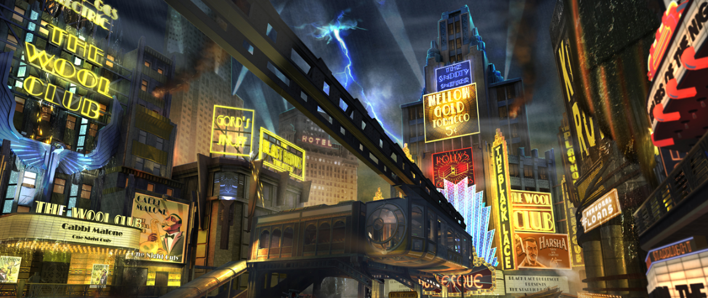
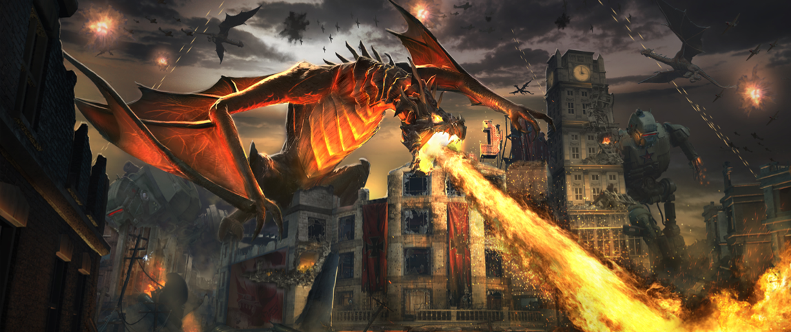

main story
Like in previous games‚ the Zombies storyline in Call of Duty: Black Ops III is told in an episodic
format‚
starting with the map "Shadows of Evil" ‚ after which
"der eisendrache" ‚ "gorod krovi" ‚
"zetsubou no shima" and finally "revalations".
"Shadows of Evil" focuses on a new group of characters: Nero Blackstone‚ Jessica
fictional Morg City. Treyarch describes the new characters as "troubled individuals" with
"a long and sordid history of past misdeeds".
Rose ‚ Jack Vincent and Floyd Campbell ‚ who reside in the history of past misdeeds".
The
four characters
are thrown into a twisted version of the city‚ overrun by
zombies‚ and are guided by a mysterious‚ unreliable figure called the Shadowman (Robert
Picardo).
"Shadows of Evil" acts as a prologue that leads into the core storyline‚ focusing on the
Dimension 63
version of the original characters: "Tank"Dempsey‚ Nikolai Belinski‚ Takeo
Masaki and Edward Richtofen ‚ who were introduced in the Black Ops II map
"Origins"‚
referred to collectively as Primis.Their story continues from where "Origins" left
off‚
as
they attempt
to prevent the events of the original timeline from ever occurring across the multiverse.
Other characters include the leader of Group 935‚ Doctor Ludvig Maxis ‚ and his
daughter
Samantha. the last 4 maps feature the original versions of Primis‚ referred
to as
Ultimis‚ and reintroduce various minor characters mentioned/featured in previous games‚
including Group
935 scientist Doctor Groph‚ the OSS spy Peter McCain‚ Dr. Maxis'
assistant Sophia ‚ the Ascension Group scientist Gersh‚ as well as introduces the mysterious
omnipotent
being Doctor Monty. Robert Picardo also briefly reprises his role from Call of
Duty:
Black Ops as United States Secretary of Defense Robert McNamara.
Shadows Of Evil
The setting takes place in the 1940's fictional Morg City where it introduces four new characters ‚ Nero Blackstone ‚ Jessica Rose ‚ Jack Vincent and Floyd Campbell as they are transported to a nightmarish realm by the Shadowman ‚ a supernatural being ‚ and the leader of the Apothicans. surrounded by zombies. where they try to survive and escape.
Der Eisendrache
The story based Easter Egg for Der Eisendrache is My Brother's Keeper, in which Primis assaults the Group 935 facility in Austria, hoping to capture the Deceptio Fracture's "Tank" Dempsey to add to the Summoning Key while also purging the remaining leaders of Group 935. Being Doctor Groph whom is stationed at the Griffin Station facility, awaiting the test subject.

Zetsubou No Shima
in the story of Zetsubou No Shima we start of with the 4 main characters on a japanese ship being
interogated by the ships crew,
asking who they are and how they came in possesion of the strange artifact( Apothican Summoning
key).
after this a wave hits the ships wherafter a fight starts between the characters and the crewmates.
after they have defeated the crewmates they have to jump ship
and escape to a island named Zetsubou No Shima a japanese experimentation facility, where they find
a
giant thrasher that ends op being
the original version of Takeo

Gorod Krovi
In Gorod Krovi, the Origins characters are hurled into an alternate, War-Torn Stalingrad where element 115 has wreaked havoc over a battlefield littered with the remnants of a battle between mechanized soldiers and deadly dragons controlled by GROUP 935. Here they find the original version of Nikolai and capture his soul with thez Summoning key
Revelations
in the Revelations the four charachters have finished what they started and ended the apocalypse with
maxis at their side.
only short after this, maxis gets called from the summoning key.
and as soon as he interacts with it he unleashes the Shadowman, who brings all hell back to the
beatifull world they had created.
so the four heroes have to once again go in the battlefield to stop the shadowman and save the wolrd
once again.
Tips And Tricks
"Hey player, you have 20 seconds before I come into your living room and kick your ass. Notice I how I didn't say shoot? Because I need fucking ammo for that!"
-Tank Dempsey, 2011. (Shangri-La)